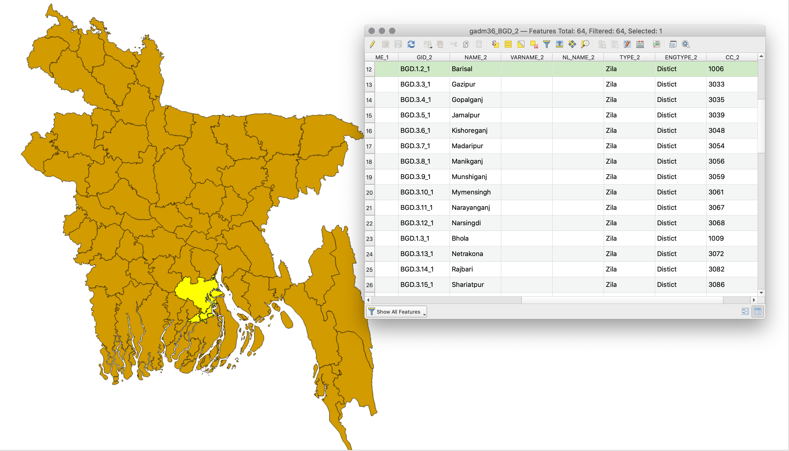

Module 0 - Gentle Introduction to GIS concepts
Author: Ben Hur
Pedagogical Introduction
This module serves as a gentle introduction to geographic concepts necessary for working with geographic information systems (GIS). By the end of this module, learners should understand the following concepts:
- map projections
- coordinate reference systems
- spatial data formats (e.g. vectors and rasters)
- parts and features of a GIS
- uses of a GIS
- examples of GIS and other geospatial applications
In addition, this module will also introduce some key concepts of Free and Open Source Software (FOSS) and Free and Open Source Software for Geospatial (FOSS4G) applications.
Required tools and resources
The required tools and resources for this module are:
- working computer
- internet connection
Prerequisites
- basic knowledge of operating a computer
Additional resources
- A Gentle Introduction to GIS - https://docs.qgis.org/3.16/en/docs/gentle_gis_introduction/index.html
- QGIS User Guide - https://docs.qgis.org/3.16/en/docs/user_manual/
- QGIS Training Manual - https://docs.qgis.org/3.16/en/docs/training_manual/index.html
- QGIS website - https://qgis.org/en/site/
- OSGeo website - https://www.osgeo.org/
- OSGeoLive website - https://live.osgeo.org/en/index.html
- What is free software? - https://www.gnu.org/philosophy/free-sw.en.html
- Open source definition - https://opensource.org/osd
Thematic introduction
Let’s start with an example:
You might have heard the phrase “All maps lie.” or you’ve seen a post on social media claiming that “The map of the world you’ve known all your life is wrong!”. Well, it’s not that maps are actively choosing to lie to you, it’s just that maps can never show you the whole truth. One such example is the relative sizes of countries.
The True Size Of (https://thetruesize.com/) is a cool web mapping application that shows how the relative sizes of countries are distorted in one of the most common maps we use (one that uses the Mercator projection). It also shows some examples of spatial data types that we will learn more about in this module. Try to use the web application to compare the size of your country with others.

Breakdown of the concepts
So why is this the case? As you will learn in this module, it’s difficult to represent the 3-dimensional shape of the earth on a flat sheet of paper. To do this, cartographers use what’s called a map projection to project the points on the earth’s three-dimensional surface to a flat surface. However, by doing so, distortion is introduced. This distortion can be on the shape, size, direction, and distances of objects on the map. All maps have at least one of these distortions. Because of this distortion, a map can never show the whole truth about the earth.
In the web app we used, the background map that doesn’t change size (the grayish one) is an example of raster data. Raster data are pixel-based representations of the world similar to photographs. Meanwhile, the shape of the countries that we can move around are examples of vector data. Vector data, unlike rasters, represent the world using discrete objects such as points, lines, and polygons.
Main content
Phase 1 title: Maps and Coordinates
When people think of the earth today, they usually picture a spherical mass of blue, green, white, and brown floating in space. This is why the traditional way to model the earth is through the use of globes.
 Figure 0.1. The Blue Marble (https://commons.wikimedia.org/wiki/Earth#/media/File:The_Blue_Marble.jpg)
Figure 0.1. The Blue Marble (https://commons.wikimedia.org/wiki/Earth#/media/File:The_Blue_Marble.jpg)
|
 Figure 0.2. de l'Isle globe (1765) (https://commons.wikimedia.org/wiki/Globe#/media/File:3quarter_globe.jpg)
Figure 0.2. de l'Isle globe (1765) (https://commons.wikimedia.org/wiki/Globe#/media/File:3quarter_globe.jpg)
|
{kind=link}
{kind=link}
However, even though the globe is able to capture most of the characteristics of the earth, it suffers from two main drawbacks:
- Globes are cumbersome and difficult to bring with you.
- Globes are only usable at small scales (e.g. finding locations of countries, the relative positions of cities, etc.). They are next to useless for activities that require large scales or fine details (e.g. city navigation).
This is where maps come in. Maps remedy these two drawbacks of globes by representing the earth as a flat surface. By doing so, maps become portable and suitable for a multitude of uses. Having said that, maps also introduce a drawback of their own. Through the process of converting a three-dimensional object (globe) into a two-dimensional one (map), distortions are introduced such that it is impossible for a map to perfectly capture the different characteristics of the earth (i.e. shapes, areas, directions).
Map Projections
A map projection is used to flatten the earth’s (or globe’s) surface into a plane in order to create a map. This transformation process introduces distortion.

You can think of the Earth as an orange. If you peel the skin, you can lay it down flat but you can never make it perfectly flat. You will always encounter one of the following issues:
- Shearing - the lengthening of the skin (or surface) in one or more directions
- Tearing - the splitting or breaking apart of the skin (or surface)
- Compressing - the shortening or shrinking of the skin (or surface)
Because of these issues, every map contains distortion in one or more of the following characteristics:
- Shape
- Area
- Distance
- Direction
Map projections can preserve (no distortion) one or more characteristics but never all at the same time. Alternatively, they can have a compromise where the distortions are balanced and minimized for all characteristics. This is due to the nature of the characteristics themselves.
Major characteristics like Shape and Area are mutually exclusive and cannot be preserved simultaneously. Meanwhile, the minor characteristics, Distance and Direction cannot be correct everywhere on the map.
In choosing what map projection to use, it’s important that you consider the purpose of the map. For example, if you wish to perform area-based analyses, it’s best to use a map projection that preserves the area.
There are several classifications of map projections. The first one is based on the characteristic/s they preserve.
- Conformal or Orthomorphic map projections are those that preserve shape or angular conformity. These are commonly used for navigation or meteorological purposes. Shapes are preserved but areas are distorted. The larger the area, the greater the distortion.
- Equal-area or Authalic map projections are those that preserve the proportion or relative areas of the objects in the map. In this kind of map projection, the larger the area being mapped, the more precise it is.
- Equidistant map projections preserve the distance of lines originating from one or two points on the map or have proper scale along one or more lines.
- Azimuthal map projections preserve the direction from one or two points on the map. These are useful for mapping routes of aircrafts and seacrafts between ports.
A single map projection can preserve more than one characteristic (e.g. an Azimuthal Equidistant projection that preserves the direction and distances from one or two points on the map) but not all of them as shown in the table below.
| Conformal | Equal Area | Equidistant | Azimuthal | |
Conformal |
- | N | N | Y |
Equal Area |
N | - | N | Y |
Equidistant |
N | N | - | Y |
Azimuthal |
Y | Y | Y | - |
Table: Can both characteristics be preserved by a map at the same time?
There exists another classification of map projections that doesn’t preserve any of the map’s characteristics but tries to minimize all the distortions in the map. These are called Compromise or Minimum Error map projections (maps that do not preserve shape nor area are called Aphylactic).
One way to show and see distortion is by using what’s called the Tissot’s indicatrix. This indicator characterizes local distortions by using circles and showing how these circles are transformed over the map.

Figure 0.3. Conformal map projection with its Tissot’s indicatrix. Circles remain as circles all over the map but their areas increase as the circles move from the equator toward the poles.

Figure 0.4. Equal-area map projection with its Tissot’s indicatrix. Circles become ellipses but their areas remain the same.

Figure 0.5. Equidistant map projection with its Tissot’s indicatrix. Notice that the heights of the circles are equal which means that the scale/distances along meridians are preserved.

Figure 0.6. Azimuthal equidistant projection with its Tissot’s indicatrix. Notice that the circles are all pointing towards the map’s center and the heights of the circles are all equal.
Another way to classify map projections is by the developable surface used to create the map. A surface is developable if it can be flattened without introducing distortions. The most commonly used surfaces are: Cylinders (Figure 0.7), Cones (Figure 0.8), and Planes (Figure 0.9).

Figure 0.7. Cylindrical projections have meridians (longitude) and parallels (latitude) meeting at right angles with the distances between meridians being equal.

Figure 0.8. Conic projections have straight meridians going to one point at the poles. The parallels are arcs.

Figure 0.9. Planar projections (commonly used in azimuthal projections) have straight meridians similar to conic projections but their parallels are circles instead of arcs.
There are countless other developable surfaces that can be used to transform a globe into a map. They can be a variation of the common surfaces like in the case of pseudo-cylindrical and pseudo-conic projections or they can be unique and entirely different surfaces such as in the Dymaxion map which uses a icosahedron (polyhedron with 20 faces), or the Cahill-Keyes projection which uses an octahedron (polyhedron with 8 faces).
A map projection can also be classified according to its aspect (Figure 0.10) or how the developable surface is positioned on the globe: either Normal, Transverse, or Oblique.

Figure 0.10. Aspects of a map projection
Coordinate Reference Systems
A Coordinate Reference System (CRS) is used to specify the location of an object on the surface of the earth through the use of coordinates. They can be classified into two:
- Geographic Coordinate Reference Systems use degrees of latitude and longitude as coordinates to refer to position.
- Projected Coordinate Reference Systems use linear units (e.g. meters, feet, kilometers) of eastings and northings as coordinates.
Knowledge of coordinate reference systems is important because even if two maps (or layers) show the same area, the coordinates of the locations in those maps will be different if the CRS they use are different.
Take this example: Map A and Map B show the same area and extent. They’re basically the same map. The only difference is the coordinate reference system they use. Map A uses CRS X and Map B uses CRS Y. Let’s say we get the coordinate of Point 1, which is (10, 10), from Map A. If we look at the coordinate (10,10) in Map B, it’s possible that Point 1 won’t be there since Map B uses a different CRS. Or if you overlay the maps over each other using a common reference, the features on the two maps won’t coincide. This knowledge of coordinate reference systems is important in any GIS.
Prior to QGIS 3.X, QGIS had an option to activate what’s called “OTF” or “On-The-Fly Transformation”. This allows layers with different CRS to be projected on the map canvas as if they were in the same CRS. With QGIS 3.X onward, this option is the default behavior of QGIS. QGIS also performs this action automatically for processing tasks. This is very important because if the layers aren’t in the same CRS, the results of spatial queries and processing like spatial joins, clips, etc. could be compromised.
You may notice that some Coordinate Reference Systems are referred to by their EPSG Code. This code refers to the CRS’ code in the EPSG Geodetic Parameter Dataset which is a registry of geodetic datums, spatial reference systems, Earth ellipsoids, coordinate transformations and related units of measurement. Most GIS, including QGIS, refer to the EPSG code to identify coordinate reference systems, projections, and perform transformations between these systems.
Common EPSG Codes include:
- EPSG:4326 - WGS 84, latitude/longitude coordinate system based used by the Global Positioning System (GPS) among others.
- EPSG:3857 - Web Mercator projection used for display by many web-based mapping tools such as OpenStreetMap and Google Maps
- EPSG:3106 - Gulshan 303 / Bangladesh Transverse Mercator
- EPSG:32645 to EPSG 32646 - WGS 84 / Universal Transverse Mercator (UTM) Zone 45N to 46N. UTM zones used in the Bangladesh
Quiz questions
- What type of map projection is best for the following use-cases?
- a general purpose map that needs to look pleasing – compromise
- a map showing a per-unit area analysis between different locations – equal-area or authalic
- a map showing a comparison of a 10-km buffer zone from different locations – equidistant
-
What type (geographic or projected) of coordinate reference system is best to use for the following use cases?
- showing the location of points using GPS – Geographic Coordinate Reference System
- computing the distance between two points – Projected Coordinate Reference Systme
- True or False – It is possible to preserve the following map characteristics together in a single map:
- Area and Shape – False
- Distance and Direction – True
Phase 2 title: Spatial Data Types
At its core, a Geographic Information System (GIS) must be able to model real-world objects, information, and phenomena such as lot boundaries, rivers, roads, temperature, etc. It does this through spatial data models.
Spatial data models are composed of two primary components that, when combined, model reality. These components are:
- Spatial features (or geometry)
- Attributes

There are two main spatial data models: raster and vector. Although any real-world object can be represented by either data model, one data model is usually better at representing certain real-world objects than the other.
Raster Data
Raster data is best used to represent continuous phenomena such as elevation or temperature.
A raster is a cell-based or pixel-based representation of real-world objects composed of rows and columns of cells or pixels where each cell or pixel represents a geographical area (think of a photograph or an image). The value of the cell represents the value of an attribute in the said geographic area. The size of the area is dependent on the spatial resolution of the raster.
Rasters are quite useful for site suitability modelling since you can combine rasters via mathematical operations (raster algebra).

Figure 0.12. A raster consists of equal-sized pixels in rows and columns.
A raster pixel may only hold one value at a time. Thus, a raster may only model one object or phenomenon at a time.
Vector Data
Vector data is best used to represent discrete objects.
Vector data comes in three primary forms: point, line, and polygon. It is more precise than rasters because points, lines, and polygons are modelled using well-defined coordinates thus making them better at representing discrete objects than rasters.
Vectors are commonly used when precise lengths, areas, and distances are needed. They are also useful when performing network analysis (e.g. finding the shortest path of road from one point to another).

Figure 0.13. A vector consists of features with their corresponding attributes.
Compared to raster pixels, a vector feature may hold more than one value at a time. These values are stored as columns in the attribute table. Each feature, on the other hand, is stored as a row.
Quiz questions
- What data type can best represent the following objects/phenomenon:
- roads
- houses
- population density
- flood hazard
Phase 3 title: Geographic Information System (GIS)
Geographic and location information have become ubiquitous in the 21st century at all levels of granularity. We have satellites, aircrafts, and even commercial drones that are able to capture large quantities of raw data over large areas over long periods of time. There are also sensors that collect and gather location information such as the GPS and other applications on our phones and gadgets.
With all of this data available to us, knowing how to properly manage, analyse, and present them is imperative. This is where Geographic Information Systems, or more commonly known as GIS, come in.
GIS is a tool/framework/system that allows us to work with geographic (or spatial) information and its corresponding attribute (non-spatial) information. In particular, a GIS should be able to:
- Collect, store, edit, manipulate, or generally, manage spatial data.
- Analyse the data using its spatial component (where the data is) or attribute (the value of the data).
- Present the data and analyses as meaningful information through maps, charts, plots, and other visualizations.
GIS is not just mapping. Although map-making is one of the most important and commonly-known aspects of GIS, it is still just one of its many parts and features. We can view the modern GIS framework as being composed of:
- Data - these refer to the pieces of information used by GIS which may or may not have location information (e.g. names of stores, locations of stores).
- Technology - these include both the hardware and software components of a GIS — the machines, instruments, and computers with the software applications used to do geospatial work.
- Methods & Analysis - these refer to the science and mathematics in GIS which allows it to perform both spatial and non-spatial (attribute) queries and computations.
- Visualization - although similar to methods & analysis, visualization can be considered as a separate component as these refer specifically to the means by which a GIS represents data graphically. These include not just maps, although that’s the most common case, but also tables, charts, graphs, etc.
- People - these are the people and/or groups of people who are involved in the use, development, teaching, and maintenance of GIS.
All parts of the modern GIS framework — from the data to the people — are integral in ensuring its success.
Quiz questions
- True or False:
- GIS can only be used with geospatial data – False
- A map is always the output when using GIS – False
- Learning GIS is difficult and expensive – False
Phase 4 title (additional): Free and Open Source Software for Geospatial (FOSS4G)
QGIS is just one example of Free and Open Source Software for Geospatial (FOSS4G) application. Other examples of FOSS4G are GRASS, PostGIS, GeoServer, GeoNode, etc. These FOSS4G applications are great tools to work with not only because they are reliable but also because, being free and open source, they have a lower barrier of entry and are highly customizable to any need. You can find a variety of free and open source geospatial applications for every need and for every part of the geospatial stack.
 applications stack")
Figure 0.14. A sample open source geospatial (or FOSS4G) stack (from Simon Nitz (https://twitter.com/si_nitz?lang=en))
Free Software
Free as in freedom not just free food.
Free software are software that adhere to the the Four Essential Freedoms of Free Software, which are:
- The freedom to run the program as you wish, for any purpose (freedom 0).
- The freedom to study how the program works, and change it so it does your computing as you wish (freedom 1). Access to the source code is a precondition for this.
- The freedom to redistribute copies so you can help others (freedom 2).
- The freedom to distribute copies of your modified versions to others (freedom 3). By doing this you can give the whole community a chance to benefit from your changes. Access to the source code is a precondition for this.
Open source
Open source software are those that have licenses which provide royalty-free use and reuse of the software together with open access to the source code. By convention, these open source licenses are those that comply with the Open Source Definition as provided for by the Open Source Initiative. Open source not only guarantees free access to the software and source code but also the ability to redistribute the software with no additional costs.
Because of the open nature of open source software, it is also a great software development model where everyone is free to update, upgrade, modify, and share their modifications to the community.
OSGeo
There are a lot of open source geospatial applications out there and sometimes the most difficult part is knowing where and how to start working with these applications. Thankfully, the Open Source Geospatial Foundation (OSGeo) (https://www.osgeo.org/) is there to help foster global adoption of open geospatial technology and support the development of these technologies.
Quiz questions
N/A
If you want to go further:
If you want to quickly try using FOSS4G applications, you can try OSGeoLive (https://live.osgeo.org/en/index.html) which is a Linux distribution (Operating System) that comes pre-installed with QGIS, GRASS, and other FOSS4G applications.
To practice your new skills, try to…
N/A
Tips
N/A